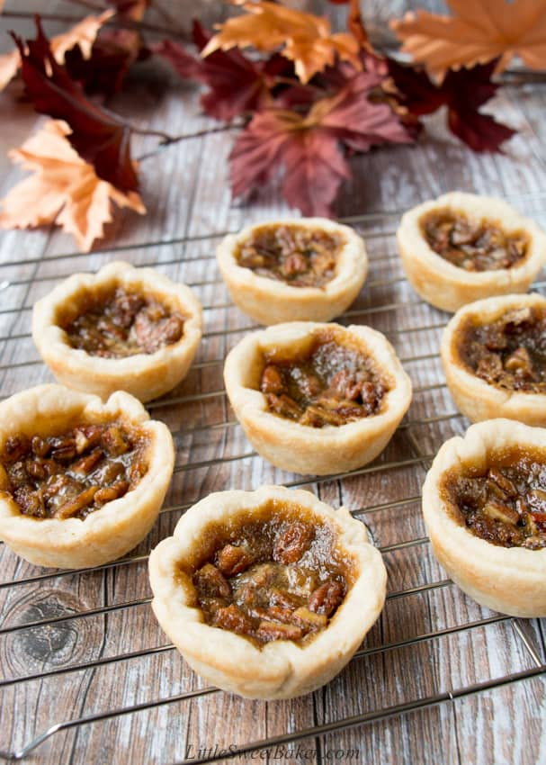

Butter Tarts

Description
Butter tarts are a perfect way to end off a 3 course dinner. These little pastries are heaven packed in a couple of bites. Although it may be a more basic and easy to make dessert, it still tastes absolutely incredible. Why? Because it's mostly sugar. But, again, we will not let that ruin our meal. On with the recipe!
Ingredients
- 3 cups (375g) all-purpose flour
- 1/2 tsp (2.5ml) baking powder
- 1/2 tsp (2.5ml) salt
- 1/2 cup (114g) lard
- 5/6 cup (114g) unsalted butter
- 2 large eggs
- 1 tsp (5ml) white vinegar
- about 1 cup (250ml) cold water
- 3/4 cup (165g) packed brown sugar
- 1 tbsp (15ml) table or whipping cream
- 1 tsp (5ml) vanilla extract
Steps
- In a large bowl, toss together the flour, baking powder and salt. Cut in the lard and 1/2 cup of butter using a pastry blender or two knives until mixture resembles coarse oatmeal.
- In a measuring cup, combine 1 egg and vinegar. Add enough cold water to make one cup. Gradually stir in the liquid, adding just enough to make the dough cling together.
- Turn the dough out onto a lightly floured surface and gather into a ball and divide into two equal portions. Tightly saran wrap both portions. Place one in the freezer for later use. Place the other in the fridge to chill for one hour.
- Roll the dough on a floured surface to about 1/8″ thick. Cut as many 4″ circles as you can. Re-roll the scraps and cut out more circles to make 12. Fit the pastry circles into a muffin pan and place back in the fridge until ready to fill.
- Preheat oven to 375F and position a rack in lower third of oven. In a small saucepan, melt the 1/3 cup of butter and brown sugar. Remove from heat and stir in the cream and vanilla. Let cool to touch (about 5 minutes) before whisking in the other egg.
- Bake for 13-15 minutes or until crust is lightly golden around the edges and filling is bubbling.
- Let cool completely in the pan. Best way to remove the tarts from the pan is to place a cooling rack (upside down) on top and flip the pan over. Then individually flip each butter tart right side up.